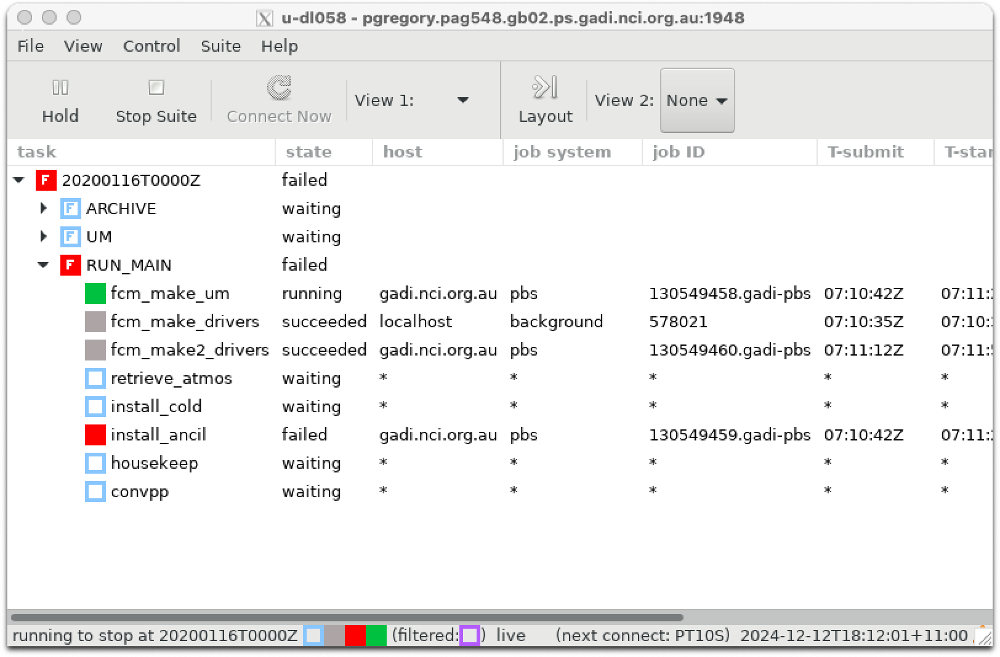
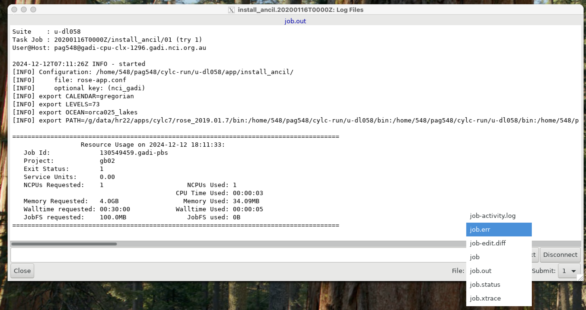

Trouble Shooting#
Running the UM can be fraught. Tasks often fail. Let’s break a task on purpose with our test suite u-dl058 and learn how to diagnose problems and re-start suites.
Broken tasks#
Let’s break the suite on purpose so we can practise dealing with problems. Let’s break the install_ancil task.
In app/install_ancil/rose-app.conf let’s change the environment variable LEVELS from 70 to 73.
i.e. change this section of the file from
[env]
CALENDAR=gregorian
LEVELS=70
OCEAN=orca025_lakes
to this
[env]
CALENDAR=gregorian
LEVELS=73
OCEAN=orca025_lakes
Now, let’s run the suite.
$ rose suite-run
That task will fail, while the fcm_make tasks will continue.

Let’s look a the job.out file for this task.
Suite : u-dl058
Task Job : 20200116T0000Z/install_ancil/01 (try 1)
User@Host: pag548@gadi-cpu-clx-1296.gadi.nci.org.au
2024-12-12T07:11:26Z INFO - started
[INFO] Configuration: /home/548/pag548/cylc-run/u-dl058/app/install_ancil/
[INFO] file: rose-app.conf
[INFO] optional key: (nci_gadi)
[INFO] export CALENDAR=gregorian
[INFO] export LEVELS=73
[INFO] export OCEAN=orca025_lakes
[INFO] export PATH=/g/data/hr22/apps/cylc7/rose_2019.01.7/bin:/home/548/pag548/cylc-run/u-dl058/bin:/home/548/pag548/cylc-run/u-dl058/bin:/home/548/pag548/cylc-run/u-dl058/share/fcm_make_um/build-recon/bin:/home/548/pag548/cylc-run/u-dl058/share/fcm_make_um/build-atmos/bin:/home/548/pag548/cylc-run/u-dl058/share/fcm_make_surf/build/bin:/home/548/pag548/cylc-run/u-dl058/share/fcm_make_drivers/build/bin:/home/548/pag548/cylc-run/u-dl058/share/fcm_make_cice_to_si3/build-cice_to_si3/bin:/g/data/hr22/apps/cylc7/cylc_7.9.7/../23.09/bin:/g/data/hr22/apps/cylc7/23.09/bin:/g/data/hr22/apps/mosrs-setup/1.0.1/bin:/g/data/hr22/apps/cylc7/cylc_7.9.7/bin:/opt/pbs/default/bin:/opt/nci/bin:/opt/bin:/opt/Modules/v4.3.0/bin:/bin:/usr/bin:/usr/local/sbin:/usr/sbin:/local/pbs/bin:/local/pbs/bin
======================================================================================
Resource Usage on 2024-12-12 18:11:33:
Job Id: 130549459.gadi-pbs
Project: gb02
Exit Status: 1
Service Units: 0.00
NCPUs Requested: 1 NCPUs Used: 1
CPU Time Used: 00:00:03
Memory Requested: 4.0GB Memory Used: 34.09MB
Walltime requested: 00:30:00 Walltime Used: 00:00:05
JobFS requested: 100.0MB JobFS used: 0B
======================================================================================
Often, you won’t find any useful messages in job.out. Let’s look at the job.err file. This file is where cylc pipes all standard error (or stderr) message from the PBS scheduler.
TIP: If you using the
cylcGUI to look at the output files, you can selectjob.errfrom a pull-down menu on the bottom right after you’ve looked atjob.out.

The job.err file contains the following.
[FAIL] file:/home/548/pag548/cylc-run/u-dl058/share/data/etc/ancil_gl/qrclim.aeroclim=source=/g/data/access/projects/access/umdir/ancil/atmos/GC5/n320e/aerosol_clims/glomap/gregorian/v1/qrclim.aerosols73.nc: [Errno 2] No such file or directory: '/g/data/access/projects/access/umdir/ancil/atmos/GC5/n320e/aerosol_clims/glomap/gregorian/v1/qrclim.aerosols73.nc'
2024-12-12T07:11:29Z CRITICAL - failed/EXIT
That is a useful error message. It tells us the task failed because it is trying to link to a file which doesn’t exist. No ancillary files in the UM_ANCIL_DIR exist with 73 levels.
Lets change levels back to 70 and save the file. This has updated the file ~/roses/u-dl058/app/install_ancil/rose-app.conf.
But how do we update the actual file in the ~/cylc-run/u-dl058 directory?
We can use the rose reload functionality by typing from ~/roses/u-dl058 directory:
$ rose suite-run --reload
The last outputs of this command should say
[INFO] u-dl058: reload complete. "suite.rc" unchanged
This tells us the suite definition in ~/cylc-run/u-dl058 has been updated, although we didn’t make any changes to suite.rc.
You can manually check the suite file has been updated by executing the following:
$ ls -lt ~/cylc-run/u-dl058/app/install_ancil/
The modified time of the rose-app.conf file should now be updated.
We can view this file from the command line using
$ more ~/cylc-run/u-dl058/app/install_ancil/rose-app.conf
[command]
default=true
[env]
CALENDAR=gregorian
LEVELS=70
OCEAN=orca025_lakes
So our changes have correctly reloaded.
We can use the reload command while the cylc suite is still running. Note your suite IS still running. It is just paused and is waiting for the next dependency to be fulfilled before the next task can be executed. If you type
$ cylc scan
You should see the suite u-dl085 along with your username an persistent session name.
Now with the correct value of LEVEL, we can execute the failed job by right-clicking on install_ancil and selecting trigger now.

The install_ancil task will now succeed, and the rest of the suite will now continue as normal.
When running a suite, you’ll find the above very useful when having to deal with failed tasks, without having to re-start the suite from scratch. The cylc workflow engine is clever enough to pick-up from where you left off. You won’t have to restart the entire suite every time you hit a problem.
Common rose/cylc problems#
This will be a maintained list of problems encountered (and fixed) with running rose/cylc ACCESS tasks.
Jobs submitted but not running#
A common issue is that you start your rose suite, which submits various jobs, but they never run.
i.e. the job state in the cylc GUI is ‘submitted’ and the job colour is bright green, but the job never begins running and never turns deep green.
This is often caused by disk quota issues. If you have insufficient disk space, either in your home directory, your /g/data/ or /scratch directories, your PBS job will not be allowed to run and will be held indefinitely.
PBS jobs will also be held if there are insufficient project allocations (e.g. you’ve run out of ‘kSU’).
See https://opus.nci.org.au/spaces/Help/pages/230490410/Why+are+my+jobs+not+running+…
for more details.
To help manage your disk quota, use some of the commands in this link:
https://opus.nci.org.au/spaces/Help/pages/236880003/Basic+Navigation…
Cannot log into a persistent session#
If you can’t log into your persistent session, you may have conflicting modules which don’t use the standard ssh environment at NCI. Often the cause of this conflict is the conda/analysis module developed by CLEX and maintained by ACCESS-NRI. You will have to unload any conflicting modules.
See this link for more information.